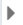
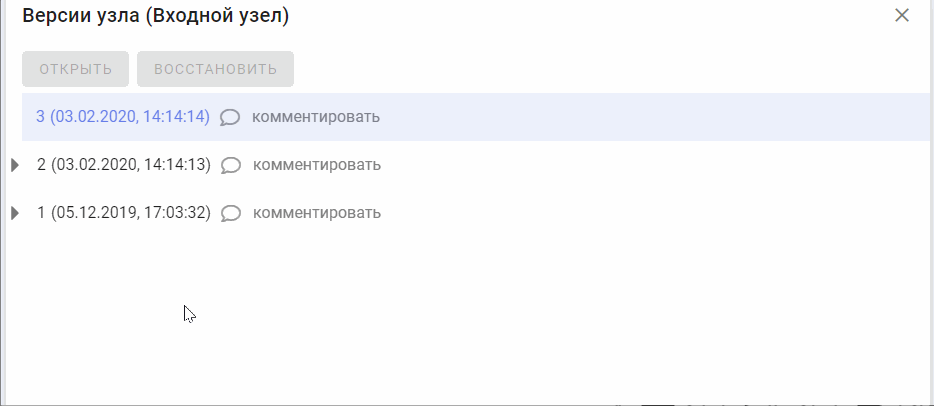
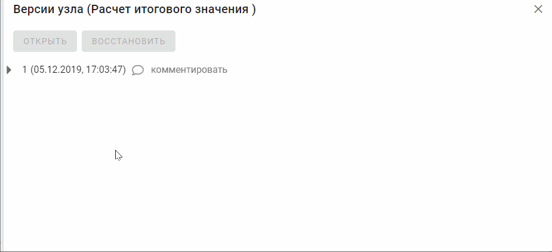

Виджет предназначен для отображения списка версий узла, а также открытия и восстановления версии узла. Виджет состоит из следующих элементов:
Для открытия версии модели необходимо из списка версий узлов выбрать нужный, затем нажать на кнопку . Далее в открывшимся списке моделей выбрать нужную и нажать на кнопку "Открыть".

Для восстановление версии модели необходимо из списка версий узлов выбрать нужный, затем нажать на кнопку . Далее в открывшимся списке моделей выбрать нужную и нажать на кнопку "Восстановить".
